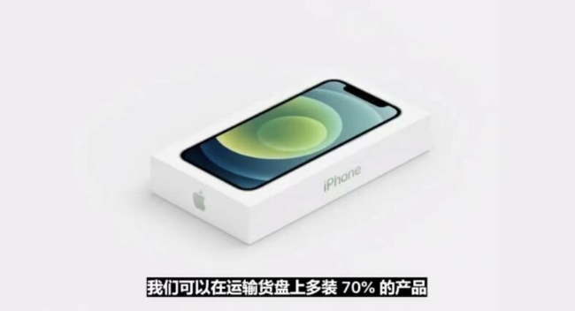
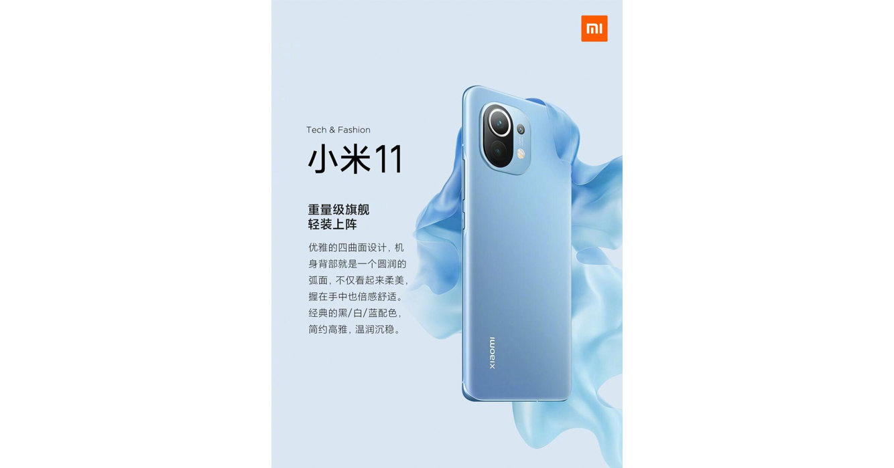
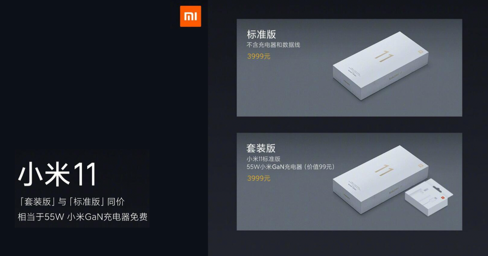

近来手机厂商似乎十分喜欢「环保」这档子事。
这点需要感谢某家「西半球最棒的科技公司」—— Apple。但是相较于 Apple 推动公司减碳减塑的努力，大家的目光似乎全在一样东西上。
来吧，我们来聊一聊「环保」和所谓「送充电器」这档事。
毕竟我觉得似乎很多人都被忽悠了。宣传的魅力啊……
众所周知，第一位「摘苹果的人」正是苹果，当然它也成为了第一位找骂的，毕竟它毫无遮掩，言曰：「我们可以在运输货盘上多装 70% 的产品」。

但是 iPhone 12 相比 iPhone 11 来说，立足产品其实完全可以称之为「重构」的升级。对这个形态和价格的设备来说，尤其是对我们敬爱的库存克星、钱包收割者 Tim Cook 先生的 Apple 来说，是一次堪称为 Breakthrough 的提升。
想一想大明湖畔的 iPhone 5c 和 iPhone XR 吧朋友们。
全新的 A14 Bionic 处理器自不必说，还有 OLED 屏幕，全新的 CMOS 以及多 P 镜头组件，全新的超瓷晶玻璃，全新升级的基带和信号，以及（聊胜于无的）PD 快充的加持。再加上 Magsafe…… Tim Cook 从未如此良心。能升级的都升级了。而且都是新技术，完全没有啃老本。
硬件研发和制造成本都是大幅度提高了的。
它从 5499 「回归」到 iPhone XR 的起售价 6499 我都认为没有任何问题。
但是它没有。iPhone 12 相较于 iPhone 11 提升明显，但是没有涨价。这意味着 Apple 确确实实把在充电器上剩下的钱（包括充电器本身，以及取消充电器带来的包装、运输等的成本下降）都回馈给了用户。
这好吗？这太好了。
而且 Apple 确实是在踏踏实实做环保。
那么小米呢？小米 11 相比于小米 10 的提升又在哪里呢？

换了一块屏幕（被欧加系教育了一年的生产线）
换了一块玻璃（被华为系教育了一年的生产线）
扬声器贴牌了（尊贵的三星系哈曼卡顿）
50W 无线闪充（算是啃 10 Ultra 的老本）
而且还少了一枚 凑数 摄像头
对，最重要的。
高通骁龙 888。对，没错，最重要的。
然后呢，然后没了，3999.
摄像头排布，内部堆叠，后盖材质…… 对于一个年发布超过 30 款新设备的厂商来说毫无压力。恕我直言，就是在啃老本。成本没有大幅度提升的同时，售价不变。
然后不给你充电器。
或许我们不能这么说。雷总诚实人怎么会坑咱们呢？

您可以「选择不要充电器」。
也就是，明明付了充电器的钱，小米建议您「为了地球不要充电器」呢！如果您非要充电器的话，小米也会非常不好意思的免费「送」一个充电器给您的哟，但是您就「不环保」了噢。「买套餐款就是不环保，浪费资源」的这个判断恕我难以苟同。
请各位谨记「羊毛出在羊身上」。
纵使小米 11 作为产品本身（刨去外观）确实非常能打，但是借用户的钱做自身的环保，这行为恕我难以苟同。不一样的东⻄定一样的价，明显不对等的行为最终受损的是终端消费者的利益。
而产品本身的产品力，与所谓「送不送充电器」亦或是「良不良心」，没有任何关系。